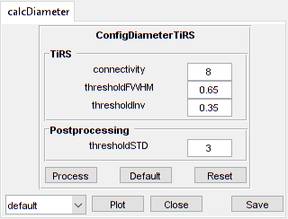

XSectScan
Analyse cross section images of vessel diameters
Contents
Usage
OBJ = XSectScan(NAME, RAWIMG, CONFIG, CH, ISDP)
Arguments
- NAME is the name for this LineScanVel object.
- RAWIMG is the RawImg object that will be used to create the LineScanVel object.
- CONFIG contains the configuration parameters needed for the calcDiameter object.
- CH specifies the channel to be used for calculating the diameter.
- ISDP specifies whether the vessel lumen to analyse is bright (i.e. positively labelled) or dark (i.e. negatively labelled).
Details
XSectScan objects are used to analyse the diameters of vessels using axial cross section images. Typically, the vessel lumen will be labelled by a fluorescent marker, like a dextran conjugated fluorophore (e.g. FITC), but the method also works with a negatively labelled vessel lumen (e.g. everything but the vessel lumen is labelled).

See Also
Examples
The following examples require the sample images and other files, which can be downloaded manually, from the University of Zurich website (http://www.pharma.uzh.ch/en/research/functionalimaging/CHIPS.html), or automatically, by running the function utils.download_example_imgs().
Create a XSectScan object interactively
The following example will illustrate the process of creating a XSectScan object interactively, starting with calling the constructor.
% Call the XSectScan constructor
xss01 = XSectScan()
Since no RawImg has been specified, the first stage is to select the type of RawImg to create. Press 2 and then enter to select the SCIM_Tif.
----- What type of RawImg would you like to load? -----
>> 1) BioFormats
2) SCIM_TifSelect a format: 2
Then, use the interactive dialogue box to select the raw image file xsectscan_scim.tif, which should be located in the subfolder tests>res, within the CHIPS root directory.

Use the interactive dialogue box to select the dummy calibration (calibration_dummy.mat):

The next stage is to define the 'meaning' of the image channels. The first channel is not needed for now, and the second channel represents the blood plasma. Press enter, followed by 1 and then enter, to complete the selection.
----- What is shown on channel 1? -----
>> 0) <blank>
1) blood_plasma
2) blood_rbcsAnswer:
----- What is shown on channel 2? -----
>> 0) <blank>
1) blood_plasma
2) blood_rbcsAnswer: 1
We have now created a XSectScan object interactively.
xss01 =
XSectScan with properties:
calcDiameter: [1x1 CalcDiameterTiRS]
channelToUse: 2
isDarkPlasma: 0
plotList: [1x1 struct]
state: 'unprocessed'
name: 'xsectscan_scim'
rawImg: [1x1 SCIM_Tif]The process is almost exactly the same to create an array of XSectScan objects; when the software prompts you to select one or more raw images, simply select multiple images by using either the shift or control key.
Prepare a RawImg for use in these examples
% Prepare a rawImg for use in these examples fnRawImg = fullfile(utils.CHIPS_rootdir, 'tests', 'res', ... 'xsectscan_scim.tif'); channels = struct('blood_plasma', 2); fnCalibration = fullfile(utils.CHIPS_rootdir, 'tests', 'res', ... 'calibration_dummy.mat'); calibration = CalibrationPixelSize.load(fnCalibration); rawImg = SCIM_Tif(fnRawImg, channels, calibration);
Opening xsectscan_scim.tif: 100% [=================================]
Create a XSectScan object without any interaction
% Create a XSectScan object without any interaction nameXSS02 = 'test XSS 02'; configTiRS = ConfigDiameterTiRS(); xss02 = XSectScan(nameXSS02, rawImg, configTiRS)
xss02 =
XSectScan with properties:
calcDiameter: [1x1 CalcDiameterTiRS]
channelToUse: 2
isDarkPlasma: 0
plotList: [1x1 struct]
state: 'unprocessed'
name: 'test XSS 02'
rawImg: [1x1 SCIM_Tif]
Create a XSectScan object with a custom config
% Create a XSectScan object with a custom config configCustom = ConfigDiameterTiRS('thresholdFWHM', 0.65, ... 'thresholdInv', 0.35); xss03 = XSectScan('test XSS 03', rawImg, configCustom); confDiam = xss03.calcDiameter.config
confDiam =
ConfigDiameterTiRS with properties:
connectivity: 8
thresholdFWHM: 0.6500
thresholdInv: 0.3500
thresholdSTD: 3
Create a XSectScan object array
% Create the RawImg array first
rawImgArray(1:3) = copy(rawImg);
rawImgArray = copy(rawImgArray)
rawImgArray =
1x3 SCIM_Tif array with properties:
filename
isDenoised
isMotionCorrected
metadata_original
name
rawdata
t0
metadata
% Then create a XSectScan object array xssArray = XSectScan('test XSS Array', rawImgArray, configCustom)
Warning: All of the RawImg objects are assumed to have the same channel
structure. If this is not true, the processing will not work as
expected; in this case you will need to create the objects seperately.
xssArray =
1x3 XSectScan array with properties:
calcDiameter
channelToUse
isDarkPlasma
plotList
state
name
rawImg
Process a scalar XSectScan object
% Process a scalar XSectScan object
xss03 = xss03.process()
Calculating diameter: 100% [=======================================]
xss03 =
XSectScan with properties:
calcDiameter: [1x1 CalcDiameterTiRS]
channelToUse: 2
isDarkPlasma: 0
plotList: [1x1 struct]
state: 'processed'
name: 'test XSS 03'
rawImg: [1x1 SCIM_Tif]
Process a XSectScan object array (in parallel)
% Process a XSectScan object array (in parallel). % This code requires the Parallel Computing Toolbox to run in parallel useParallel = true; xssArray = xssArray.process(useParallel); xssArray_state = {xssArray.state}
Processing array: 100% [===========================================]
xssArray_state =
'processed' 'processed' 'processed'
Plot a figure showing the output
% Plot a figure showing the output hFig03 = xss03.plot(); set(hFig03, 'Position', [50, 50, 600, 600]);
Produce a GUI to optimise the parameters
% Produce a GUI to optimise the parameters
hFigOpt = xss03.opt_config();
 Output the data
% Output the data. This requires write access to the working directory fnCSV03 = xss03.output_data('xss02', 'overwrite', true); fID03 = fopen(fnCSV03{1}, 'r'); fileContents03 = textscan(fID03, '%s'); fileContents03{1}{1:5} fclose(fID03);
ans = time,diameter,areaPixels,maskSTD,mask ans = 0.070,86.702,1476,FALSE,FALSE ans = 0.209,88.963,1554,FALSE,FALSE ans = 0.348,86.290,1462,FALSE,FALSE ans = 0.488,85.994,1452,FALSE,FALSE